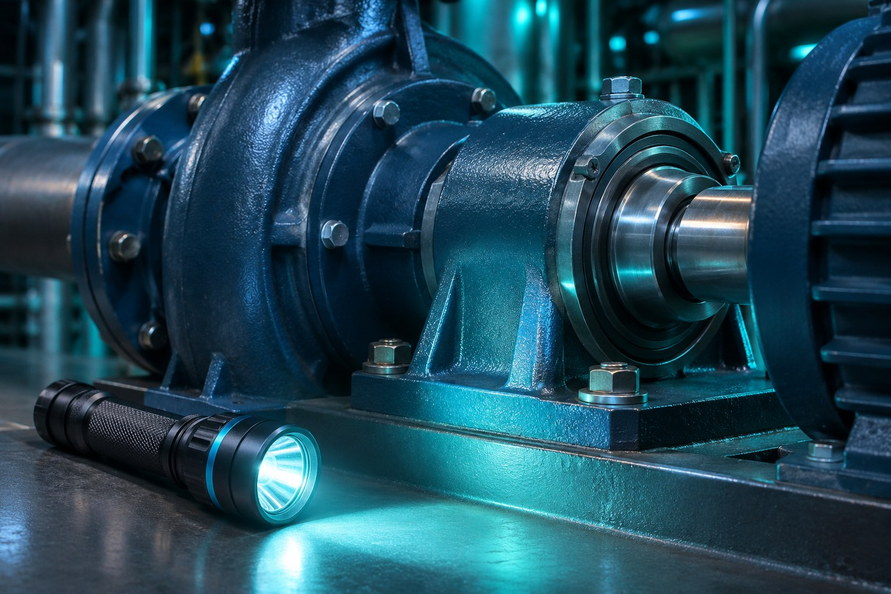

9:41 ● ▰
Участок водоподготовки
Видеть узел.
Помнить
каждую точку.
Проверки и замечания
в одном маршрутном листе.
MVP приложения
от 385 000 ₽
1. Допуск к смене
Участок водоподготовки
Проверки и замечания
в одном маршрутном листе.
2. Маршрут
Утренний обход
Корпус и соединения
Индикация и маркировка
Доступ и ограждения
Учебный чек-лист интерфейса. Производственный регламент задаётся отдельно.
3. Проверки
Н-04 / маршрутный лист
Корпус без видимых повреждений
Маркировка читается
Доступ к узлу свободен
4. Замечание
По отметке «Дефект» нельзя понять, что нужно исправить.
Опишите дефект минимум в 10 символах.
При опасной ситуации действуйте по регламенту участка. Деможурнал не уведомляет диспетчера.
5. Итог смены
Насосный узел Н-04
Пояснение появится после заполнения.
Замечания требуют рассмотрения ответственным специалистом.
Пример — концепт для портфолиоЗапись в производственный журнал не отправляется.
